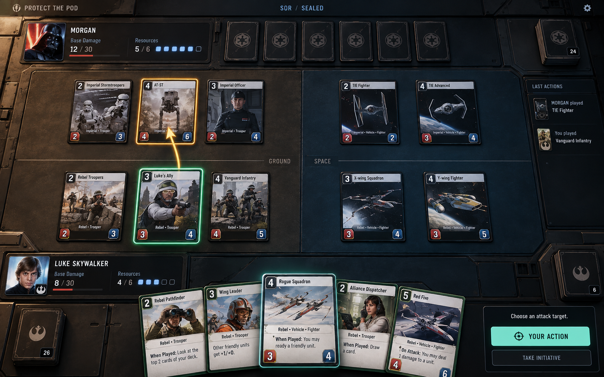
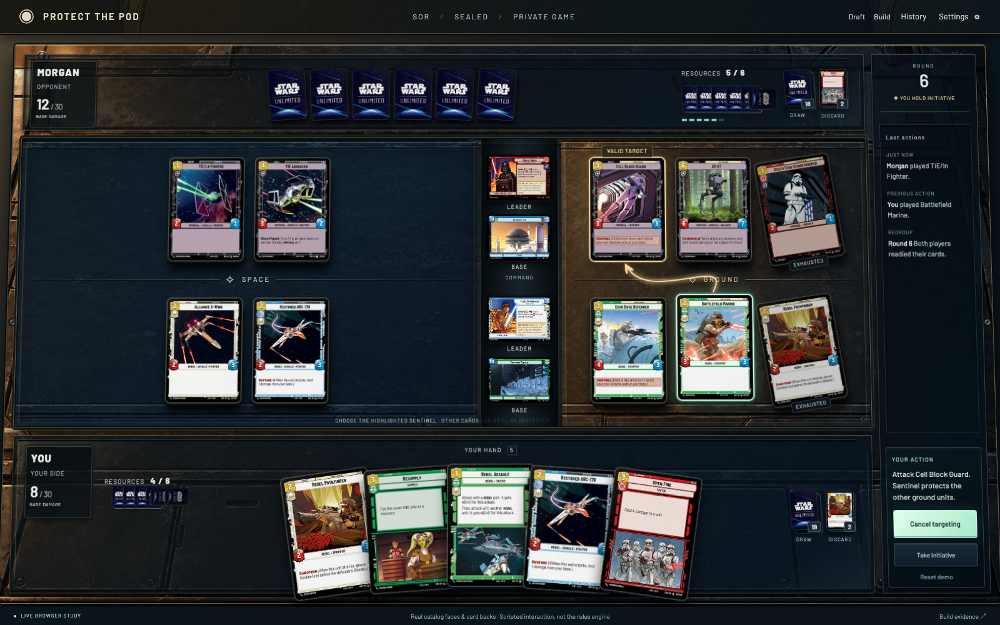
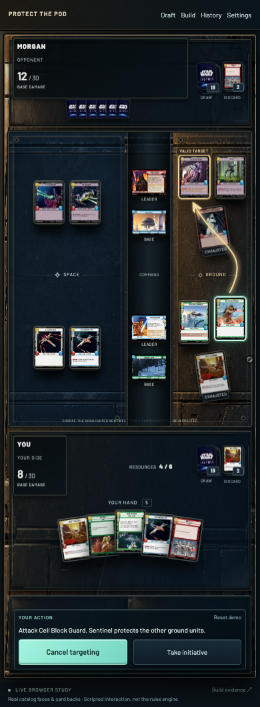
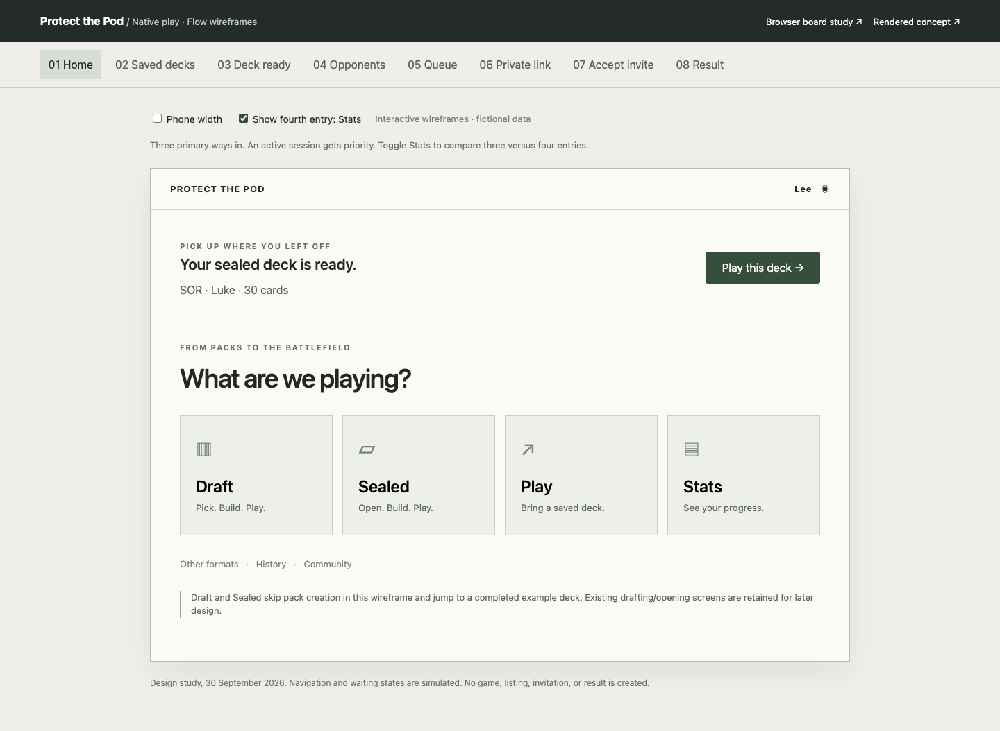

Protect the Pod · Native play · 30 September 2026From your first pack
to your next opponent.
A first design pass for an end-to-end limited experience. Simple flows around a tactile, cinematic battlefield that stays usable on a phone.

01 / Visual target · AI-generated rendering. Material and lighting direction; invented card content is not a rules specification.Now built with the real cards.
The second pass uses intact catalog faces, real leaders and bases, and the actual SWU card back. An illustrated empty metal table supplies the physical materials; real cards, perspective, contact shadows, and targeting remain live HTML/CSS/SVG. Inspect cards, flip a leader, and try the scripted attack. It is not connected to Baize.

02 / Desktop implementation study · Shallow card perspective, shadows, art, and clear arena divisions.
03 / Phone implementation study · Both arenas stay visible; tap cards for full details.A shorter path to playing.
Eight clickable wireframes cover home, saved decks, deck ready, opponent discovery, queue, invitation, joining, and results. Toggle Stats to compare three versus four homepage entries.

04 / Flow wireframes · Layout and hierarchy only; not a proposal to replace PTP’s visual identity with a light theme.